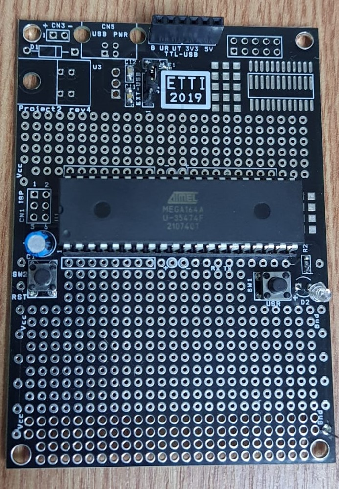

P42 - Mircia Flaviu & Dionisie Crina
Mod de implementare
În cadrul acestui proiect ne dorim să realizăm un boloboc electronic (dispozitiv care ne arată dacă o suprafață este plană). Acesta va fi realizat cu ajutorul unui microcontroller, a unui accelerometru și giroscop cu 3 axe și a unor LED-uri care au rolul de a indica gradul de înclinare a unei suprafețe, simulând bula de aer a unui boloboc.
Vom utiliza un accelerometru și giroscop cu 3 axe MPU6050, achiziționat de pe site-ul Optimus Digital, acesta fiind necesar pentru a detecta mișcarea și pentru a verifica orizontalitatea unei piese, unghiul de înclinare al acesteia. Acest accelerometru este potrivit pentru proiectul nostru, deoarece are o tensiune de alimentare cuprinsă între 3,3V-5V și are un regulator de tensiune inclus pentru a putea lucra în acest range. Conține un ADC încorporat pe 16 biți care ne oferă o precizie ridicată.
Senzorul de acceleratie este un instrument important pentru masurarea si monitorizarea miscarii si a acceleratiei, fiind utilizat intr-o gama larga de aplicatii si industrii. Rolul lor principal este de a detecta schimbarile de viteza sau de miscare ale unui obiect in spatiu, iar in cadrul proiectului nostru suntem interesati de pozitia unui obiect, deci de miscarea acestuia.
De la acest modul am conectat pinii de Vcc la pinul Avcc al procesorului, la fel GND, SDA la pinul PC1, iar SCL la PC0.
SDA (Serial Data) și SCL (Serial Clock) sunt două dintre porturile de comunicație I2C utilizate de MPU6050. Acestea permit transmiterea de date între MPU6050 și alte dispozitive I2C, cum ar fi microcontrolerele, senzorii sau alte dispozitive periferice.
SDA este portul de date seriale, care transferă datele între MPU6050 și alte dispozitive I2C. SCL este portul de ceas serial, care furnizează semnale de sincronizare pentru transferul de date între dispozitive.
În timpul comunicării I2C, MPU6050 acționează ca un dispozitiv sclav, permițând altor dispozitive să inițieze și să controleze transferul de date. Porturile SDA și SCL sunt utilizate de dispozitivele master pentru a transmite și a primi date, prin schimbarea stării acestora între nivelurile HIGH și LOW, conform specificațiilor de protocol I2C.
Modulul MPU 6050
Schema bloc internă a accelerometrului si giroscop MPU6050
Schema Bloc a modului de functionare
Cum va functiona proiectul?
Valorile intoarse de accelerometru sunt prelucrate de catre ATMega16 pentru a obtine unghiul de inclinare. Pe baza unghiului calculat de accelerometru se aprind convenabil cele 7 LED-uri, simuland bula de aer dintr-un boloboc mecanic.
Semnalul nu va fi citit prin intermediul ADC-ului (Analog-to-Digital Converter) al AVR Atmega164A, ci se vor folosi pinii SDA si SCL impreuna cu Protocolul de comunicare I2C (Inter-Integrated Circuit) al microcontrollerului. Datele de iesire din cele 2 porturi (SDA si SCL) sunt deja in format digital, nemaiavand nevoie de procesul de conversie al unui ADC.
De la acest modul am conectat pinii de Vcc la pinul Avcc al procesorului, la fel GND, SDA la pinul PC1, iar SCL la PC0.
Continua mai jos
Descriere Hardware
1: Etapa Initiala

Placuta cu componentele initiale lipite.
2: Etapa comuna
Placuta cu divizorul rezistiv lipit.
Am ales o rezistenta de R1=83Ω si inca una de R2=1kΩ. Rezultand un K=R1/(R1+R2)=0.07=7%.
Divizorul rezistiv este alimentat de la VCC din pinul 31 al AVR Atmega 164A, iar masa este pusa pe portul 32. De asemenea, conform cerintei din etapa 2 divizorul este pus pe pinul PA4.
3: Etapa avansata

Placuta cu cele 7 LED-uri necesare, impreuna cu lipiturile de pe spate.
Fiecarui LED i se asociaza un bit de pe portul B (am ales sa folosim 7 LED-uri inloc de 8 pentru a putea aprinde un singur LED in mijloc atunci cand este detectata o suprafata plana, astfel simuland bula unui boloboc). Am limitat curentul prin LED-uri la aproximativ 15mA folosind rezistoarele R1-R8 cu valoare de 220Ω si o toleranta de +/- 1%, utilizand formula:
R = (Vcc-VLED)/ILED => R = (5V-2V)/15mA => R = 200 Ω
4: Etapa finala
Placuta cu accelerometrul lipit. Stadiul final.
In etapa 4, cea finala, am lipit accelerometrul MPU-6050, care foloseste port-urile SDA/SCL nemaiavand nevoie de un ADC, conversia analog-digitala realizandu-se in interiorul accelerometrului.
De asemenea, am incercat sa pastram o pozitie cat mai paralela a accelerometrului fata de placa pentru a avea o acuratete mai mare (respectiv pentru un offset mai mic in codul de calibrare).
Bill of Materials (BOM)
| Cantitate | Ref | Valoare | Capsula | Obs | Furnizor, cod produs | Pret unitar(lei) |
| 1 | R1 | 10k | 0805 | UPB | ||
| 1 | R2 | 470 | 0805 | UPB | ||
| 1 | C1 | 1uF | THT | UPB | ||
| 2 | C2, C3 | 18pF | 0805 | UPB | ||
| 5 | C5, C6, C11, C12, C13 | 100nF | 0805 | UPB | ||
| 1 | D2 | LED | THT | UPB | ||
| 2 | SW1, SW2 | Switch | THT | UPB | ||
| 1 | J1 | CON3 | THT3x100mils | Jumper 3 pini | UPB | |
| 1 | soclu DIP40 | THT | pentru U1 | UPB | ||
| 1 | U1 | ATMega164A | DIP40 | pe soclu | UPB | |
| 1 | CN2 | conector | pentru TTL-USB | UPB | ||
| 1 | X1 | cristal de cuart | THT | UPB | ||
| 1 | TTL-USB | https://www.optimusdigital.ro/ro/interfata-convertoare-usb-la-serial/144-modul-convertor-usb-la-serial-pl2303.html | 7.99 | |||
| 1 | U1 | accelerometru si giroscop cu 3 axe | THT | https://www.optimusdigital.ro/ro/senzori-senzori-inertiali/96-modul-senzor-triaxial-mpu-6050.html | 15.49 | |
| 7 | D1-D8 | LED | THT | |||
| 1 | Rx1 | 82 | THT | Rezistenta folosita pentru divizorul de tensiune | ||
| 1 | Rx2 | 1k | THT | Rezistenta folosita pentru divizorul de tensiune | ||
| 7 | R1-R7 | 220 | THT | |||
| 4 | conectoare mama-tata | pentru conectare TTL-USB | https://www.emag.ro/set-10-fire-dupont-mama-tata-30-cm-cl95/pd/D4J66JBBM/?utm_campaign=share_product&utm_source=mobile_dynamic_share&utm_medium=android | 2.85 |